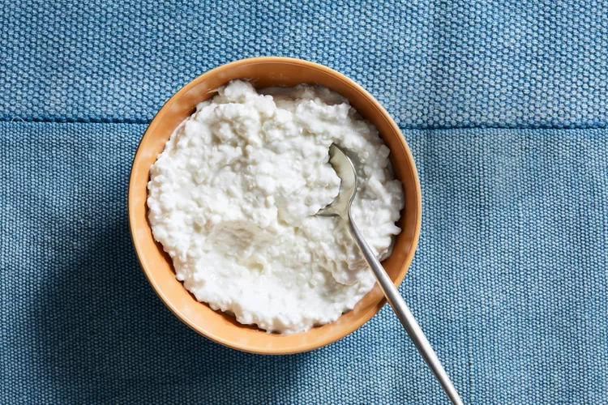
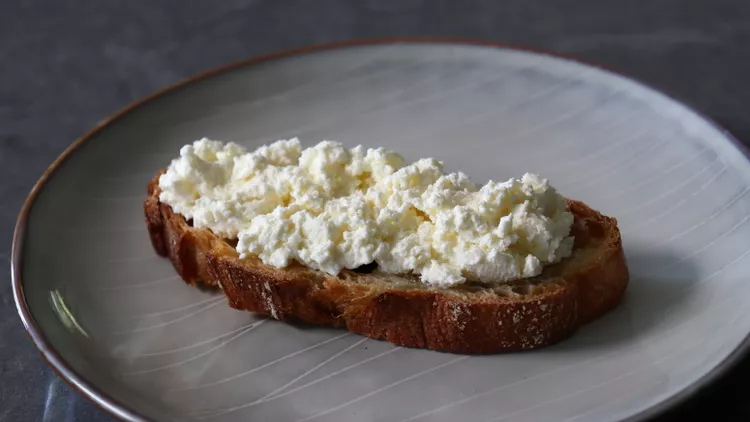

Lasagna

Description
Lasagna is a delicious traet for the whole famliy! Bring this recipe to first Baptist and you'll have the best lasagna this side of the church social! It is easy to make, and you can do it all without using more than one casserole dish!
Ingredients
- A Bowl
- Cottage Cheese
- Toast of your choosening
Directions
- Using a spoon, greedily glob a generous amount of cottage cheese into a bowl.
- With the same spoon, schmear some of the extra cottage cheese onto a piece of toast.
- There you have it! Perfectly made Caprese Salad!

Return Home